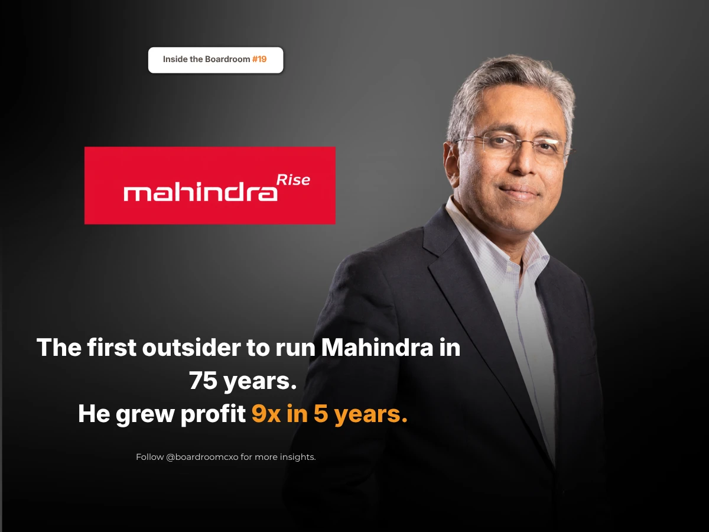

In June 2020, a Mahindra Group executive told reporters the group was ready to hand over SsangYong, the Korean carmaker it had saved from collapse ten years earlier. He was not the chairman. He was not the chief executive either.
He was giving it away.
The reason sat in the accounts. In the year to March 2020, Mahindra's businesses outside India lost more than ₹5,200 crore, wiping out most of what the rest of the group had earned. Profit for the year fell almost 98%, from ₹5,315 crore to ₹127 crore. Return on equity, the profit a company makes on its owners' money, dropped from 14.9% to 6.4%.
Who Is Anish Shah?
The man speaking was Anish Shah, then Mahindra's deputy managing director and group finance chief. He had spent fourteen years at GE Capital before joining the group. In April 2021, he became the first person from outside the founding family to run Mahindra in seventy-five years, and not everyone was pleased. "Will we still be the same Mahindra that we were before, or will we become GE?" he later said people were asking.
SsangYong was not his mistake. Anand Mahindra had bought it himself, years before Shah took operating control of the group's finances.
What He Did With the Mess He Inherited
That same month in 2020, the group told analysts it would reach 18% return on equity within five years, a modest ambition given how far the number had fallen. Most leaders who inherit a mess start by cutting, and stop there. Shah did not.
He exited fifteen businesses that were not performing. Then he spent what that freed: a majority stake in the truck maker SML Isuzu, a life insurance venture with Canada's Manulife, and serious money behind electric vehicles and SUVs. The promise took him eighteen months. "We got to the RoE target in 18 months rather than five years," he says.
By March 2026, Mahindra was earning ₹17,099 crore a year on sales of ₹1.98 lakh crore, nine times the profit of the year he took charge. It had taken second place in the Indian car market from Hyundai, which had held that position for seventeen years.
The Boardroom Lesson Most Turnaround Stories Miss
Most coverage of this story stops at the headline: outsider takes over, cuts the fat, profit recovers. What gets skipped is the sequencing. Shah did not treat the fifteen exits as the plan. He treated them as the funding mechanism for the plan, the SML Isuzu stake, the Manulife venture, the EV and SUV investment, that actually moved the return-on-equity number.
Cutting is not a strategy. It is only how you pay for one.
A board that watches a new CEO cut costs and stops there is watching half the job. The harder, more revealing half is what they choose to fund with the capital that frees up.
Common Mistakes Boards Make When Hiring an Outsider CEO
Boards bringing in a first-ever non-family or non-insider chief executive to run a large, diversified group tend to make the same three errors.
They hire for the turnaround and forget to check for the redeployment plan. Almost any competent operator can exit underperforming units. Far fewer can articulate, in advance, exactly where that freed capital should go next.
They underestimate the internal skepticism a finance-background outsider will face. Shah's own line about "will we become GE" captures a real risk: a CFO-turned-CEO is often read internally as a cost-cutter first, which can undercut support for the growth bets that actually matter.
They set recovery targets too conservatively, then treat beating them as luck. An 18% RoE target over five years, hit in eighteen months, is not a lucky break. It is a signal the original target undersold the operator, worth revisiting when setting the next set of goals.
A Framework for Evaluating This Kind of Candidate
When we brief boards on a CXO search involving a finance-background operator stepping into a group-CEO or turnaround mandate, we push for three specific checks.
- Ask what they would fund, not just what they would cut. A candidate who can only describe the businesses they would exit has half a plan. Push for the specific bets they would make with the capital those exits free up.
- Test their read on speed versus the board's own targets. Shah's team beat a five-year target by three and a half years. Ask candidates directly whether the targets on the table are realistic, aggressive, or sandbagged, and why.
- Look for evidence they can hold a diversified portfolio's confidence, not just its numbers. Running a conglomerate through a sharp portfolio cut requires keeping the remaining business heads engaged, not just producing a cleaner balance sheet.
Why This Belongs in the Boardroom, Not Just the Business Pages
This is the same succession pattern we examined in Noel Tata's thirteen years building Trent after being passed over at Tata Sons: a leader trusted with the harder, less glamorous assignment, who used it to prove something the more obvious candidate never had to prove. Shah's version played out over eighteen months instead of thirteen years, but the underlying test was identical, whether the operator could turn a mandate nobody envied into a result the whole board would point to.
The market does not reward the executive with the most reassuring background. It rewards boards that can tell the difference between someone who will cut their way to a better-looking balance sheet and someone who will use that same cut to fund the next decade of growth.
Frequently Asked Questions
Who is Anish Shah?
Anish Shah is the managing director and chief executive of Mahindra Group, a role he took up in April 2021 as the first person from outside the founding family to lead the group in seventy-five years. He joined Mahindra as deputy managing director and group chief financial officer after fourteen years at GE Capital.
Why were Mahindra's overseas businesses struggling before Anish Shah took over?
In the year to March 2020, Mahindra's businesses outside India lost more than ₹5,200 crore, dragging group profit down almost 98%, from ₹5,315 crore to ₹127 crore, and return on equity from 14.9% to 6.4%. Much of the strain traced back to SsangYong, the Korean carmaker Mahindra had acquired roughly a decade earlier, which the group was preparing to hand over by mid-2020.
What did Anish Shah do as Mahindra Group CEO?
Anish Shah exited fifteen underperforming businesses from the Mahindra portfolio, then redeployed the freed capital into a majority stake in truck maker SML Isuzu, a life insurance joint venture with Canada's Manulife, and expanded investment in electric vehicles and SUVs.
How fast did Mahindra hit its return-on-equity target under Anish Shah?
In June 2020, Mahindra told analysts it would reach 18% return on equity within five years. Under Anish Shah, the group reached that target in eighteen months instead.
How is Mahindra performing under Anish Shah today?
By March 2026, Mahindra Group was earning ₹17,099 crore a year on sales of ₹1.98 lakh crore, roughly nine times the profit recorded the year Anish Shah took charge. The group also took second place in the Indian car market from Hyundai, which had held that position for seventeen years.
Related Reading
Noel Tata: The Job He Didn't Get, and the One He Built Instead
Read → R · 02 Founder Leadership · August 2026Everyone Said Royal Enfield Was Finished. Siddhartha Lal Asked for Two Years.
Read → R · 03 Founder Leadership · September 2026He Ran India's Biggest Luggage Company. Then He Bought the Rival One-Tenth Its Size.
Read →Looking for an operator who can turn a hard mandate into a clear result?
We screen for candidates who can articulate what they would fund, not just what they would cut. Brief us on your next CXO mandate and we will tell you what the market actually has to offer.
Brief Us on a Mandate See all Finance & CFO roles we fill →